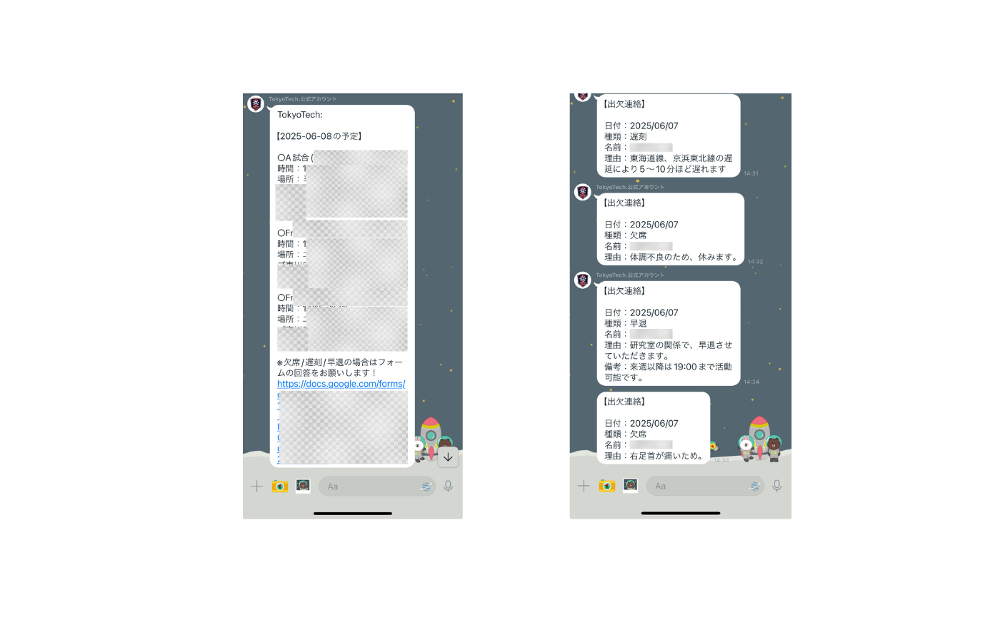

大学の部活動向けに、Google Apps Script（GAS）とLINE Messaging APIを活用した2つのLINEボットを開発しました。欠席連絡の効率化と予定管理の自動化を実現し、部活動運営の負担軽減に貢献しました。
開発期間
2025年2月 - 2025年3月
開発目的
- 欠席連絡の手続きを簡素化し、管理者の負担を軽減
- 部活動の予定管理を自動化し、参加者の情報共有を円滑化
- Google WorkspaceとLINEを連携させた効率的な運用システムの構築
開発した機能
- 欠席連絡ボット
- Google Formからの欠席連絡をリアルタイムでLINEに転送
- 欠席理由や期間などの詳細情報を自動で整理
- 管理者向けの一覧表示機能
- 予定通知ボット
- Google Calendarと連携した自動予定通知
- 翌日の活動予定を毎日自動配信
- 場所や持ち物などの詳細情報を含む通知
使用技術
- Google Apps Script（GAS）
- LINE Messaging API
- Google Forms
- Google Calendar API
制作過程
まず、部活動の運営における課題をヒアリングし、必要な機能を明確化しました。その後、Google Apps Scriptを用いてLINE Messaging APIとの連携を実装し、2つのボットを開発しました。
欠席連絡ボットでは、Google Formの送信トリガーを活用し、フォームの回答をリアルタイムでLINEに転送する機能を実装。予定通知ボットでは、Google Calendar APIを使用して予定情報を取得し、毎日定時に翌日の予定を配信する機能を実装しました。
開発後は実際の部活動でテスト運用を行い、ユーザーフィードバックを基に機能の改善を重ねました。その結果、欠席連絡の手続き時間が削減され、予定の周知漏れも減少するなどの成果を上げることができました。